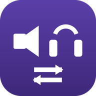

Sound Output Switcher
Switch your default speakers or headphones with a global hotkey or the tray menu. A brief on-screen name confirms the change.
Windows 10 (1809+) and Windows 11 · x64 and ARM64 · One-time purchase
Get it from Microsoft Store
Features
- Global hotkey (default Win+Alt+O) cycles to the next playback device
- Tray menu lists every playback device — click to switch
- Optional: cycle only the devices you tick
- On-screen toast shows the new device name, or an honest message if the switch did not take
- Start with Windows · 15 listing languages · fully offline — no accounts, ads, or telemetry
- One-time purchase (local Store price)
Privacy
See the privacy policy. The app is offline, collects no data, and stores settings only on your PC.